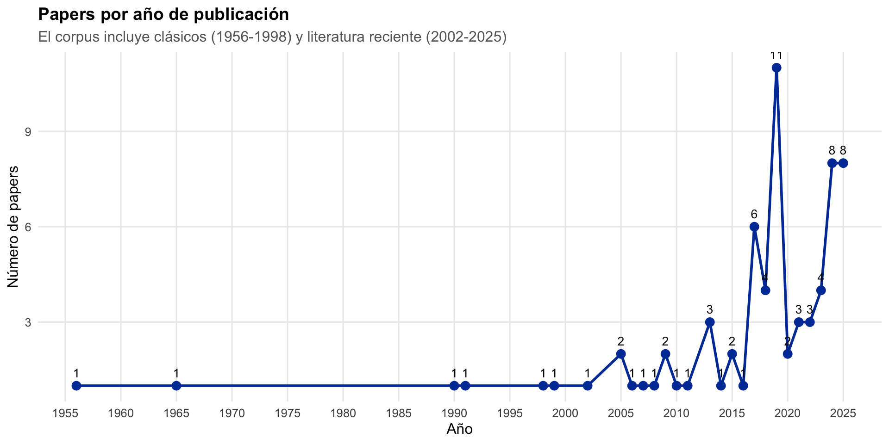
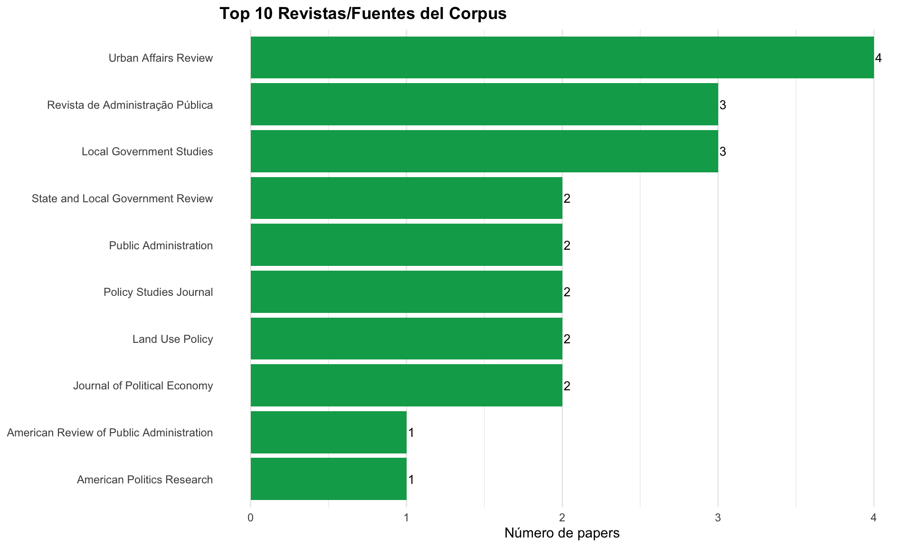
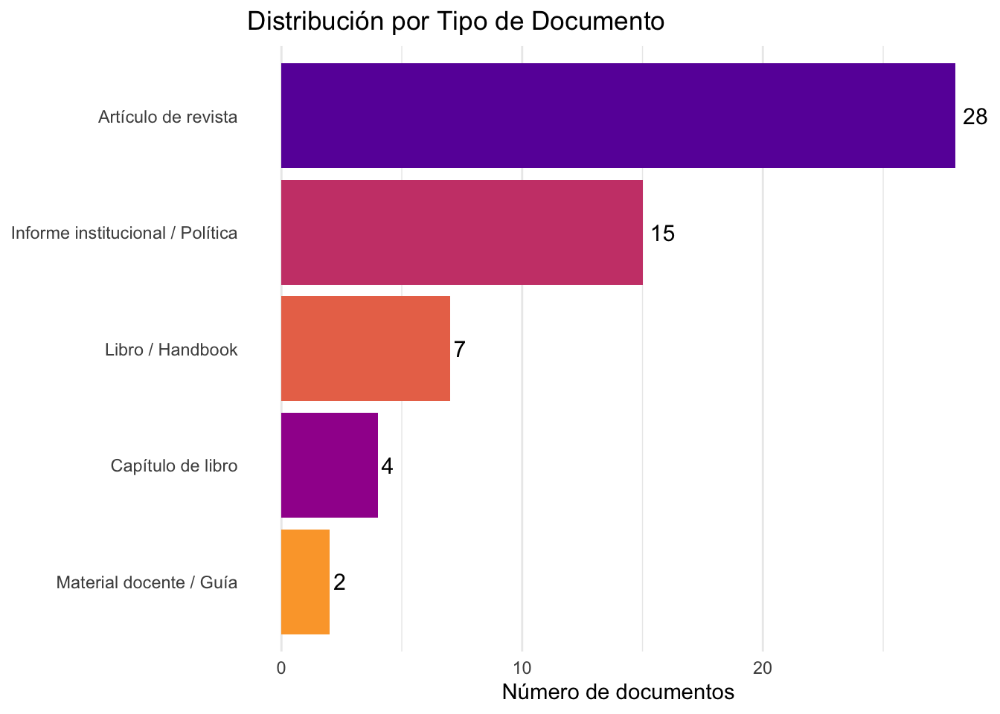
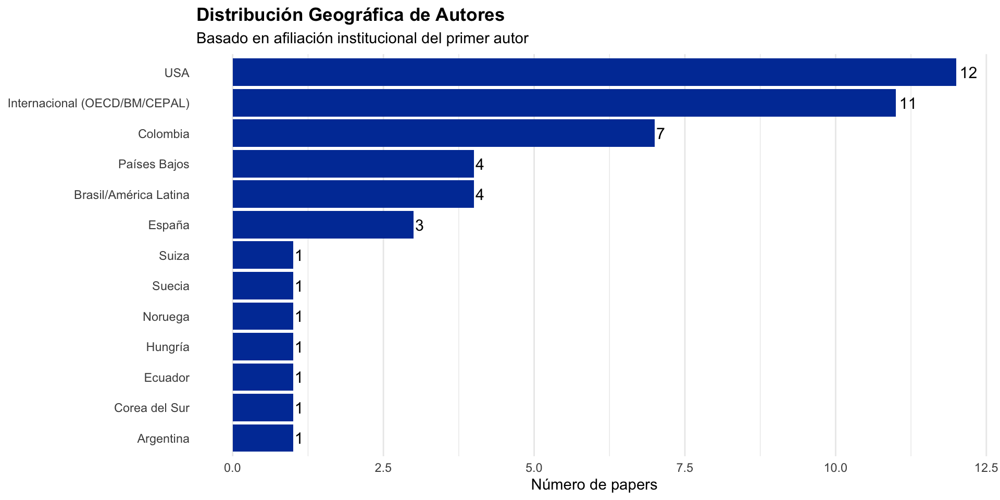

Análisis Bibliométrico
Patrones de publicación, autores y citaciones
Sobre este Análisis
Este análisis bibliométrico examina el corpus de 56 referencias del proyecto usando métricas de cienciometría: distribución temporal, productividad de autores, redes de co-citación y análisis de palabras clave.
Estadísticas Generales del Corpus
Documentos
- Total de papers: 72
- Rango temporal: 1956–2025
- Papers última década: 52 (72%)
Autoría
- Total de autores: 97
- Colaboración promedio: 1.7 autores/paper
Distribución Temporal
Productividad de Autores
Top 10 Autores Más Prolíficos
| Autor | N° Papers | % Corpus |
|---|---|---|
| Bel, Germà | 5 | 6.9% |
| {OECD} | 5 | 6.9% |
| Feiock, Richard C. | 4 | 5.6% |
| Abrucio, Fernando Luiz | 3 | 4.2% |
| Grin, Eduardo José | 3 | 4.2% |
| Martinez-Vazquez, Jorge | 3 | 4.2% |
| Ring, Irene | 3 | 4.2% |
| Warner, Mildred E. | 3 | 4.2% |
| {Instituto Geográfico Agustín Codazzi} | 3 | 4.2% |
| {World Bank} | 3 | 4.2% |
Revistas Fuentes

Nota
Las revistas predominantes son de administración pública (Public Administration, Urban Affairs Review) y política pública (Policy Studies Journal), confirmando el enfoque del corpus en gobernanza y gestión pública.
Tipo de Documentos

Composición diversa: 50% artículos peer-reviewed, 27% informes institucionales (OECD, BM, CEPAL, DNP), 13% libros/handbooks, y 7% capítulos. La expansión incorporó fuentes de política pública que contextualizan la evidencia académica.
Análisis de Colaboración
Países de Afiliación de Autores

Red de Co-Autoría
Clusters identificados:
- Cluster Bel-Warner: Colaboración transatlántica (Barcelona-Cornell) en meta-análisis
- Cluster Feiock: Red de FSU centrada en ICA framework
- Cluster colombiano: Sanabria, Leyva, Guzmán (emergente)
- Cluster Martinez-Vazquez/Bahl: Federalismo fiscal (Georgia State)
Análisis de Co-Citación
Autores clásicos co-citados (incluidos en el corpus ampliado):
- Elinor Ostrom: Teoría de acción colectiva y recursos comunes
- Tiebout: Teoría de la competencia intermunicipal
- Mancur Olson: Lógica de la acción colectiva
- Paul Krugman: Nueva geografía económica
- Wallace Oates: Federalismo fiscal
- Feiock: ICA framework (citado en casi todos los papers empíricos)
Índice de Diversidad
- Países representados: 13
- Diversidad: Media-Alta
- Concentración: ~60% USA + Europa + Intl. orgs
- Rango: 70 años (1956-2025)
- Mediana: 2019
- Concentración: 72% última década
- Revistas diferentes: 21
- Concentración: Top 3 revistas = ~20% del corpus
- Diversidad: Alta (múltiples campos)
Limitaciones del Análisis
Conclusiones del Análisis Bibliométrico
Fortalezas del Corpus
- Masa crítica amplia: 56 papers proveen base robusta para síntesis
- Diversidad temática: 7 líneas temáticas cubren teoría, evidencia empírica, casos y política
- Actualidad: Mayoría publicado en última década
- Fundamentos teóricos: Incorpora clásicos (Oates, Tiebout, Krugman, Ostrom, Olson)
- Contexto colombiano: 13% del corpus directamente sobre Colombia
Debilidades y Vacíos
- Sesgo hacia países desarrollados: La mayoría de evidencia empírica proviene de USA/Europa
- Evaluaciones de impacto: Ningún RCT, solo 1 cuasi-experimental riguroso
- Sectores específicos: Limitada literatura sobre transporte y catastro a nivel provincial
- Sin evidencia cuantitativa sobre EATs: No existen estudios de impacto sobre las PAPs colombianas
Agenda de Investigación Futura
El proyecto puede contribuir llenando vacíos:
- Evidencia cuantitativa sobre EATs colombianos
- Análisis costo-beneficio de delegación de competencias
- Factores de éxito diferencial entre PAPs
- Medición de costos de transacción en contexto local
Datos Abiertos
El análisis bibliométrico completo está disponible en:
- Código R: GitHub
- Datos BibTeX: references.bib
- Resultados: Este documento (HTML)